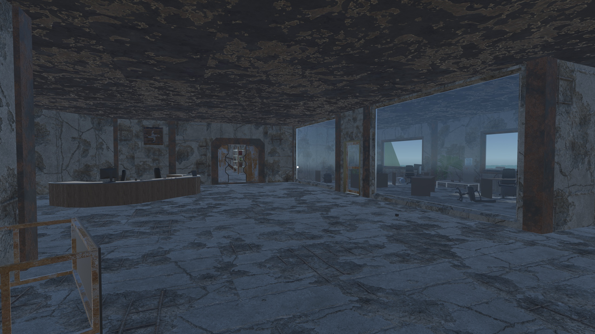
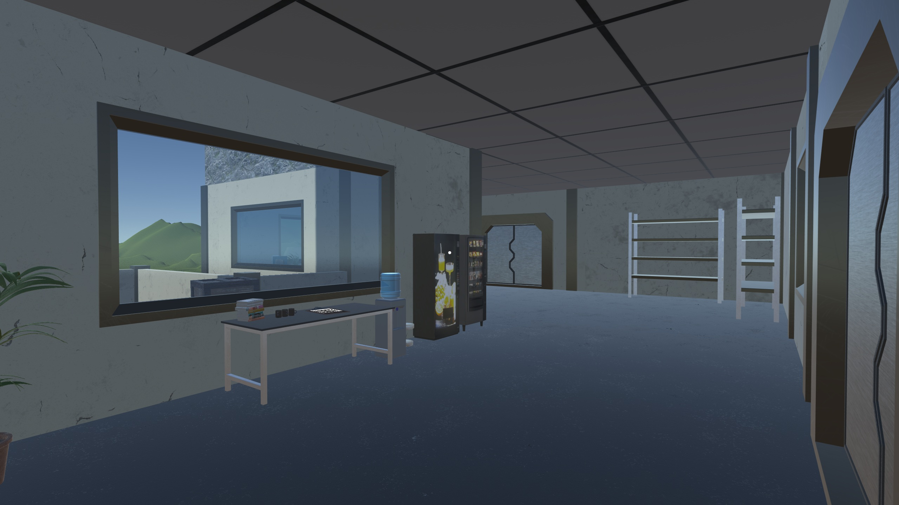
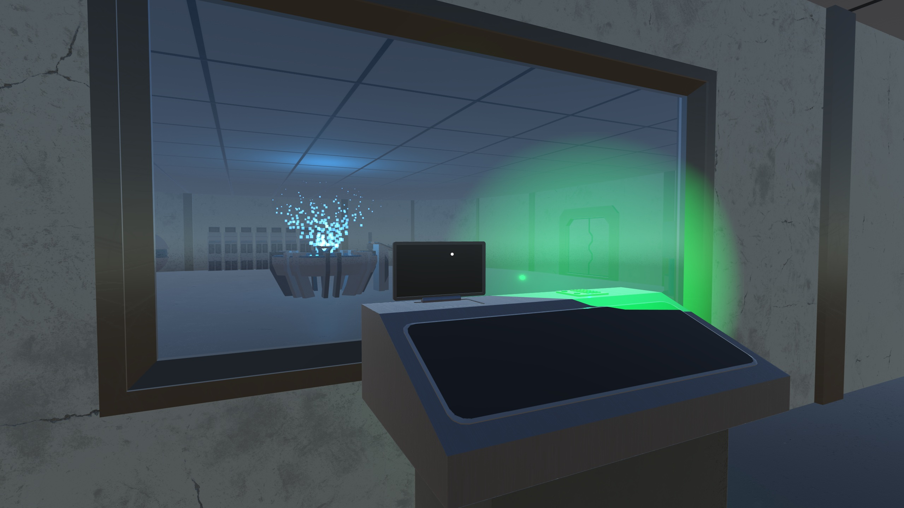
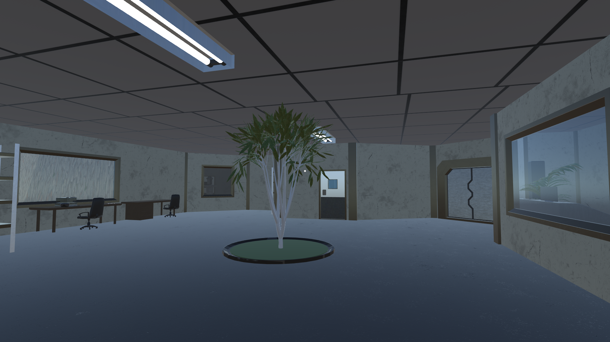
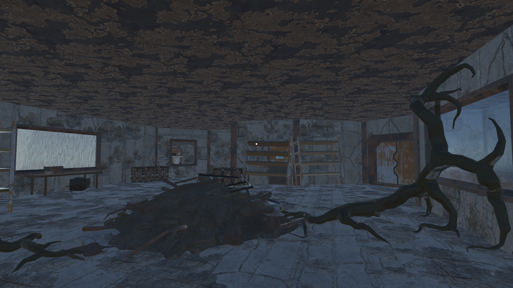
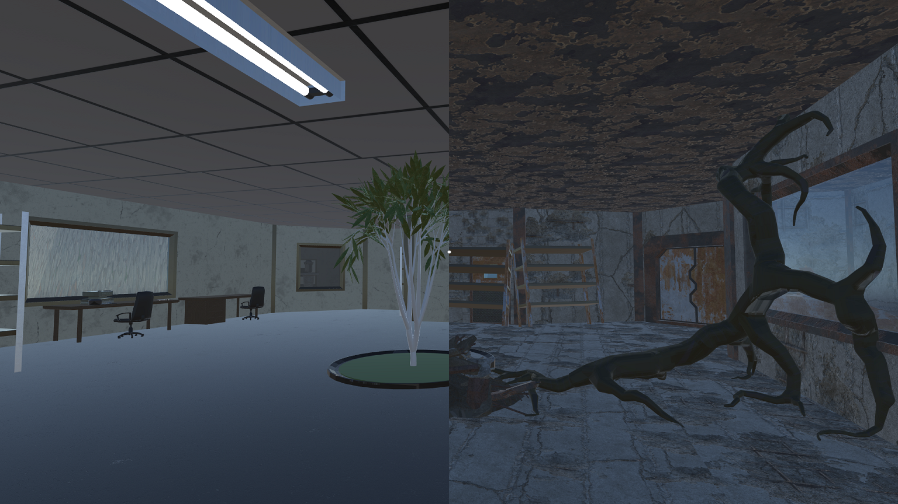

Luna Insula







Overview
Luna Insula is an exploratory puzzle game made for the Making Games course at IT University of Copenhagen. You play as Walter, a janitor who finds himself in the wrong place at the wrong time while cleaning a laboratory. After entering a strange room, he is pulled into a distant future where the facility is ruined and the Moon is shattered across the sky.
The core mechanic is switching between two futures: a near future and a distant future. The player uses that time shift, together with classic movement and interaction, to solve environmental puzzles and understand what happened to the Moon and the facility.
Role and Contributions
I took on the role of a Game Design Lead. At the beginning I led brainstorming sessions, sketched ideas, and helped create a unified design vision for the team. I also assisted the main level designer with map creation and cohesion, especially once the game had to be downscaled into a clearer final structure.
My art role became much larger than planned because the team needed more original 3D assets. I learned a lot of Blender from zero during the project, made environment assets, and helped communicate the art direction I wanted for the game's desolate, realistic look.
The post-mortem made me realise how important it is to protect the design lead role when a project starts to lose scope. I learned to be more assertive with final design decisions, to communicate expectations earlier, and to keep the team aligned with the shared vision.
Engine and Tools
Unity, Blender, Twinmotion, Revit, Photoshop